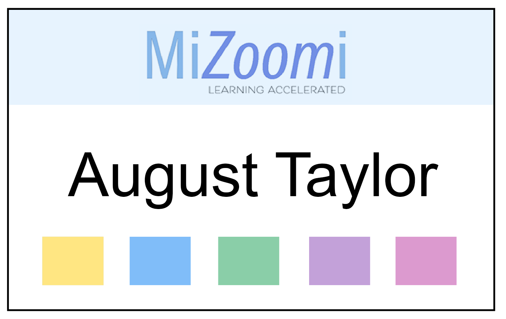

Project 2: Instructional Design: How to Use Zoom
Introduction and Purpose:
Working with a team, MiZoomi, we are constructing a training seminar to teach new educators how to use the Zoom platform. For our project we are documenting our procedure of Analysis, Designing, Development, Implementation and finally Evaluation.
Our course is part of New Teacher Institute Training (NTI). NTI is for new educators and is designed to provide skills to make new teachers successful in the classroom. NTI is a seven-day training to prepare educators who previously worked in the industry, with no teaching experience or training, to transition successfully into the classroom. Participants can earn three college credit hours towards their Career Education Temporary Authorization Certificate (TAC) or Career License to Teach secondary students.
Assessments

One key part of the Instructional Design process is the the many assessments that are used to guage the educational needs before you begin designing any part of the training curriculum.
One of key assessment that can take place during the training itself, is formative assessment. One thing that we are adding to our training is to have milestone assessments that take place during breaks in the training. Each color along the bottom of the nametag designates a section. If the assessment at each section is successfully completed, our participants will get that color "punched" signifying that they have achieved that milestone. This is also a great way for us as trainers to see if we are meeting the goals we have set in place for each section.
Assets